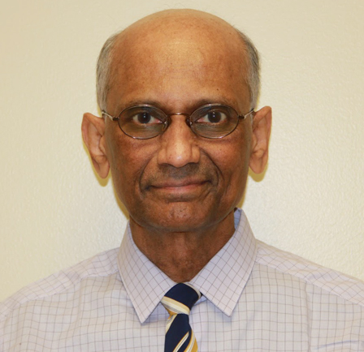
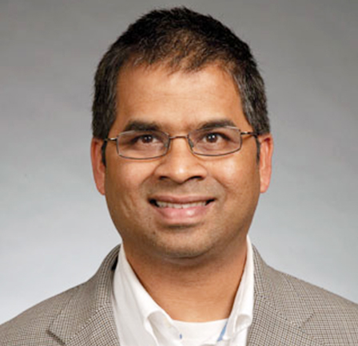
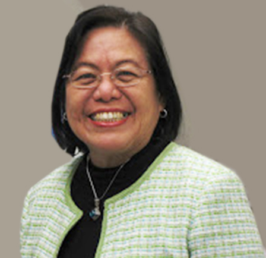
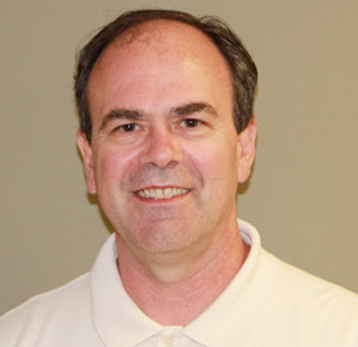

-

Dr. Krishna B. Reddy, MD, FACA, FACPM.Diplomat American Board of Addiction Medicine
Diplomat American Board of Preventive Medicine
Specialized in Addiction Medicine
In 1973, Dr Reddy completed his residency in anesthesiology at Brooklyn Jewish Medical Center in Brooklyn, New York. He then became a staff anesthesiologist at Good Samaritan Hospital in Dayton, Ohio from 1973 to 1996. During this period of time, he was director of obstetric anesthesia from 1976 to 1987, and chairman of the department of anesthesiology from 1984-1985.
In 1993, he became the department chief of the anesthesiology service at the Veteran’s Affairs Medical Center in Dayton, Ohio. He was also director of the Pain Management Interventional program at the Veteran’s Hospital from 1993 to 2004.In 2003, he established Dayton Pain Center, LLC and has been the Director of the center from 2003 to the present
In medical school Dr. Reddy was the best student through out the medical school years, and was the best graduating student in his class. He received gold medals for his outstanding performance in Anatomy, Pharmacology, Pathology, Medicine and Obstetrics & gynecology at Kakatiya Medical School, India. He received highest honors in Medicine and Anatomy for scoring the highest score among 3 medical colleges. While serving as the Director of Obstetric anesthesia at Good Samaritan Hospital, Dayton, he virtually performed thousands of epidural injections for pain relief. He has extensive experience in regional anesthesia and interventional pain procedures. He was he first physician to implant continuous intrathecal pump for cancer pain in South west Ohio in 1984 .He also pioneered in being one of the first in Ohio to implant dorsal column stimulator for chronic intractable pain treatment in 1978. He takes pride in teaching and conducted training programs for medical students, medical residents, dental residents, nursing students, and CRNA students while he was serving as Chief of Anesthesiology at Veteran’s Affairs Medical Center, Dayton. Dr. Reddy is Clinical Associate Professor of Surgery and anesthesia at Wright School of Medicine and is on the faculty since its inception, 1976 to the present.
Dr Reddy is certified by numerous professional organizations including:
- * Board Certified by the American Board of Anesthesiology
- * Board Certified by American Board of Pain Medicine
- * Board Certified by the American Board of Hospice and Palliative Medicine
- * Board Certified by the American College of Cardiology in Electrocardiography
- * Board Certified in Critical Care Medicine by the American Board of Anesthesia
- * Fellow, American College of Pain Medicine
- * Diplomat of the American Academy of Pain Management
- * Fellow of the American College of Anesthesiology
- * Diplomat of the American Board of Anesthesiology
- 
Dr. Srinivas Erragolla, MD.Diplomat American Board of Addiction MedicineIn 2005, Dr Erragolla completed Physical Medicine and Rehabilitation residency from Medical College of Wisconsin affiliated Hospitals in Milwaukee, WI. He was appointed Chief Resident in PGY-1V year of residency. He received best graduating resident award in June 2005. In 2006 he finished ACGME accredited Pain fellowship from University of Missouri Columbia affiliated program. In 2007 he finished Clinical Electromyography Fellowship from Medical College of Wisconsin affiliated Hospitals in Milwaukee, WI.
In Medical school, he got first rank in Forensic science subject. In Pre-Med he obtained a rank in top 1% among the 40,000 students who took the (MCAT Called EAMCET). In Secondary School he was awarded Merit certificate for being among the top 1% of All India Secondary school Examination, and secured distinction in all the 5 Subjects.
Dr Erragolla has Ohio State Medical License from 6/22/07. He is Board Certified in Physical Medicine and Rehabilitation. His interests are:
- * Treating acute and chronic spine and peripheral joint related pain with interventional procedures and medications.
- *Botox injection for spasticity/ hyperhydrosis/ torticollis and focal dystonias as in Parkinson’s disease.
- 
Dr. Lita Mathai, M.D.Dr. Lita Budiamal Mathai completed the residency in Anesthesiology and graduated from the program at Thomas Jefferson University Hospital in Philadelphia in 1981. She became board certified in Anesthesiology in 1983 and in Pain Medicine in 2011. Dr. Budiamal Mathai has since been in the Practice of pain Management and Anesthesia. She served as Staff Anesthesiologist at Thomas Jefferson Hospital in Philadelphia, Miami Valley Hospital,, Children’s Medical Center,, Grandview Hospital in Dayton. She was appointed as Director of Pain Management center at Wayne Hospital from 1998 to 2001 and practiced as Pain Management specialist at Grandview Hospital from 2001 till 2007. She joined the Dayton Pain Center in July 2008.
Dr. Budiamal Mathai came to Canada from her native country Indonesia in August 1975. She obtained her Medical degree from Gajah Madah University, Jogjakarta, Indonesia. She moved to United States in 1980 to join the Anesthesia residency program at Thomas Jefferson University Hospital in Philadelphia. She was awarded Robert D. Dripps Memorial award in July 1981 for outstanding senior resident in anesthesiology.
Dr. Budiamal Mathai is a Member of the American Academy Pain Medicine, and American Society of Anesthesiology. She holds an appointment as Clinical Assistant Professor, Department of Surgery, Wright State University, Dayton, Ohio from 1984 to Present.
- 
Dr. Grant GoodwinDr. Grant Goodwin graduated from Western States Chiropractic College in Portland Oregon in 1989. In 2005 he was one of few chiropractors in the country to successfully blend practices with Medical and Osteopathic doctors. His specialty is Workers’ Compensation claims. At Dayton Pain Center he continues his Workers’ Compensation practice and serves as the Practice Manager. Dr. Goodwin serves on the advisory board for Fortis College in Centerville, Ohio and speaks at continuing education seminars for Certified Medical Assistants.
 Dr. Vraj Chauhan
Dr. Vraj ChauhanDr. Vraj Chauhan earned his Master of Science at Wright State University in 1975 and his Ph.D. at Columbus University in 2000. He has held a license as a Professional Clinical Counselor in the State of Ohio since 1994. He has been providing Counseling and Psychotherapy services in the Dayton region including Good Samaritan Hospital, Monday Program, Project Cure and has been with the Dayton Pain Center since 2008. He is skilled at managing the psychological manifestations of chronic pain as well as dependency and addiction issues.
Simer P Singh, M.D.Dr. Singh graduated from Grant Medical College, Mumbai, in 2005 then received his Masters in Public Health from the University of Alabama in 2008. His was named the Chief Resident in PM&R at Rochester University with Fellowships in Spinal Cord Injury at Stanford, and in Anesthesiology Pain Management at Rochester University
Glenn H Kluge, M.D.Diplomat American Board of Addiction MedicineDr. Kluge graduated from University of Miami School of Medicine in 1979. His internships were at University of Texas, Northeastern Ohio University of Medicine and Menninger School of Psychiatry, Residency in Psychiatry.
Edward I Nelson, M.D.Dr. Nelson graduated from Loma Linda University of Medicine in 1985. He also performed his Internship and Residency at Loma Linda. He has studied extensively in Spain as well and is fluent in the Spanish language. While in Spain he learned guitar, and this remains his primary hobby.
Stephen T Mathai, M.D.Dr. Mathai, a retired pediatrician, is now working part time treating opioid dependence. His education is diverse with training occurring in India, Nigeria, Canada and Pennsylvania.
Arlene HarshmanPatient Care Coordinator---Dr. Jan GoudaDr. Jan Gouda graduated from medical school at Assuit University in Egypt in 1982. He completed two years of Neurosurgery/Pain fellowship in Toledo in 1998. He has 10 years of neurosurgery residency training in Egypt and Ireland prior to his fellowship in Toledo. Dr. Gouda has extensive experience as neurosurgeon and pain specialist. He was the director of neurosurgery and Pain & Palliative care in Alexandria Egypt for over 14 years. He pioneered to establish and direct an accredited neurosurgery residency training program in Alexandria before he moved to Dayton, Ohio to join Dayton Pain Center in August 2012. He has published many articles and authored book chapters in pain and neurosurgery.